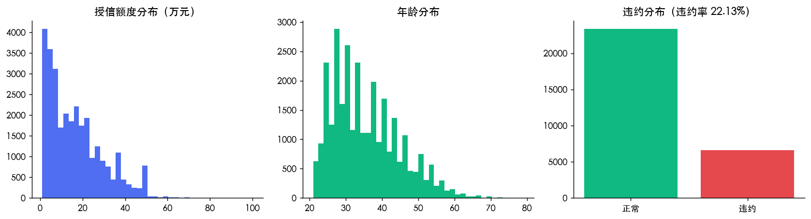
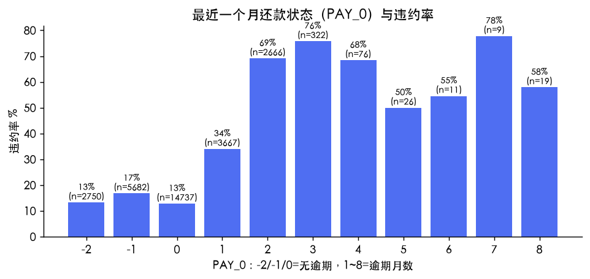
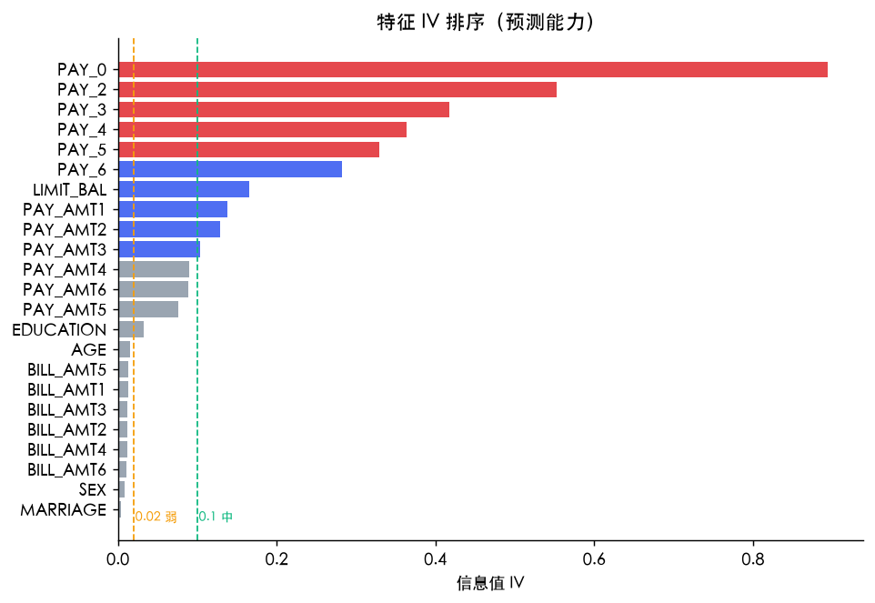
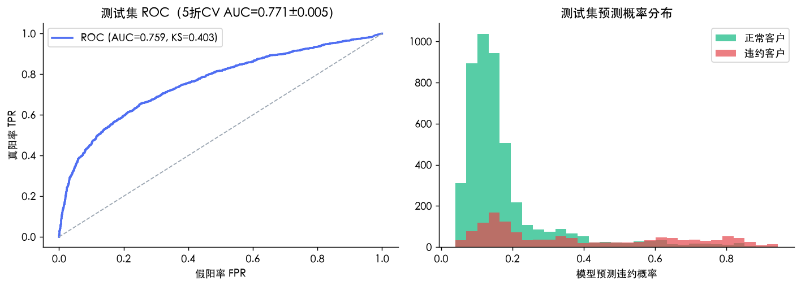
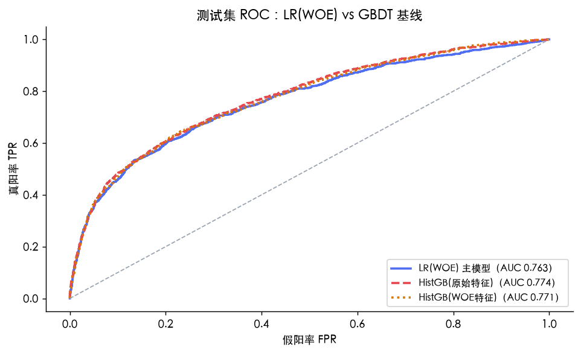
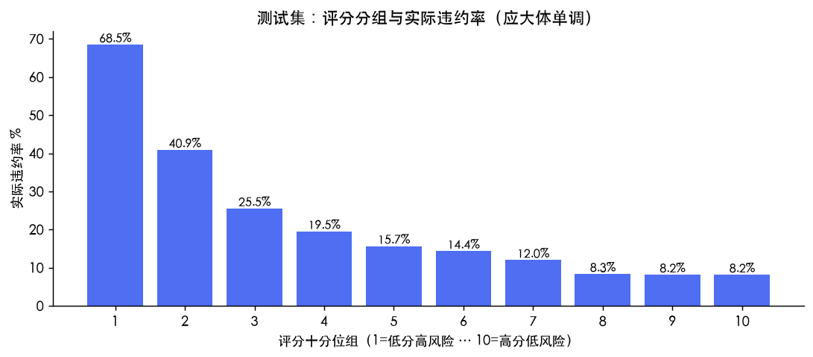

1 · 业务问题与数据
信用风控的核心问题：在放款之前，判断客户未来违约的概率。本项目使用 UCI 公开数据集（29,965 个客户样本、23 个特征），目标变量为「下月是否违约」（违约率 22.13%）。特征涵盖授信额度、人口属性、6 个月的还款状态 / 账单金额 / 还款金额。
完整流程：数据清洗EDA分箱与 WOE/IV共线性筛选逻辑回归AUC/KS 评估评分卡转换PSI 稳定性
清洗动作：剔除重复样本 35 条；学历/婚姻字段中的未知类别码（0、5、6）归并为「其他」，避免哑变量陷阱；训练/测试按 8:2 分层抽样（23,972/5,993）。
2 · 探索性分析


图1 · 数据概览；图2 · 还款状态与违约率
结论：还款状态是最强的违约信号——最近一个月无逾期的客户违约率在 10%~15%，而逾期 2 个月及以上的客户违约率跃升至 50% 以上，梯度清晰，业务含义直白。
3 · 特征分箱与 WOE/IV 筛选

图3 · 特征 IV 排序
方法：数值变量等频分箱（低频箱自动向邻箱合并），按 Score = 427.1 + 57.71 × ln(好坏比)计算各箱 WOE（证据权重）与整列 IV（信息值）；IV < 0.02 的弱特征剔除。WOE 变换同时完成了两件事：把非线性关系线性化（对逻辑回归友好），并把所有特征统一到同一量纲。
结论：预测能力排序为「还款状态（IV 0.3~0.9，强）＞ 授信额度与还款金额（0.1~0.3，中）＞ 人口属性（<0.02，剔除）」——与行业经验一致：历史行为比人口画像更能预测违约。
4 · 逻辑回归建模与评估

图4 · 模型评估（ROC 与概率分布）

图4b · 与 GBDT 基线的 ROC 对比
与 GBDT 基线的定量对比
| 模型 | 5折CV AUC | 测试集 AUC |
|---|---|---|
| LR(WOE) 主模型 | 0.773 ± 0.005 | 0.763 |
| HistGB(原始特征) | 0.782 ± 0.005 | 0.774 |
| HistGB(WOE特征) | 0.780 ± 0.005 | 0.771 |
为什么最终选择逻辑回归
默认超参的 HistGradientBoosting 只把测试集 AUC 提高约 1 个百分点（0.763 → 0.774），代价是失去系数可解释性——而评分卡的业务价值恰恰在于每个分数都能拆解到特征与分箱层面。此外注意：LR 使用 IV 筛选后的 14 个特征即可达到接近全特征的表现（口径差异见两表 AUC），说明筛选后信息几乎无损。
这个对比是「可解释性 vs 性能」权衡的定量证据：当复杂模型只带来边际提升时，简单模型是更负责任的选择。
入模特征与系数（WOE 尺度）
| 特征 | 系数 |
|---|---|
| PAY_0 | -0.770 |
| PAY_2 | -0.032 |
| PAY_3 | -0.197 |
| PAY_4 | -0.164 |
| PAY_5 | -0.115 |
| PAY_6 | -0.223 |
| LIMIT_BAL | -0.308 |
| PAY_AMT1 | -0.258 |
| PAY_AMT2 | -0.206 |
| PAY_AMT3 | -0.144 |
| PAY_AMT4 | -0.203 |
| PAY_AMT6 | -0.137 |
| PAY_AMT5 | -0.028 |
| EDUCATION | -0.373 |
关键指标
| 5折交叉验证 AUC | 0.771 ± 0.005 |
|---|---|
| 测试集 AUC | 0.759 |
| 训练集 AUC | 0.773（与测试集差距小，无明显过拟合） |
| KS 统计量 | 0.403 |
KS > 0.4 在评分卡实务中属于区分度较好；共线性处理剔除了 0 个特征（|r|>0.7 保留 IV 高者）。
5 · 评分卡转换
Score = 427.1 + 57.71 × ln(好坏比)，PDO=40，600分=20:1。逻辑回归的对数几率被线性映射为直观的信用分数：分数越高风险越低。
PAY_0
| 分箱 | 得分 |
|---|---|
| -1 | +45.1 |
| -2 | +58.3 |
| 0 | +60.6 |
| 1 | +3.7 |
| 2 | -61.7 |
| 3 | -79.6 |
| 4 | -61.7 |
| __RARE__ | -27.1 |
PAY_2
| 分箱 | 得分 |
|---|---|
| -1 | +31.2 |
| -2 | +30.9 |
| 0 | +31.3 |
| 2 | +27.7 |
| 3 | +27.3 |
| 4 | +28.2 |
| __RARE__ | +28.3 |
PAY_3
| 分箱 | 得分 |
|---|---|
| -1 | +35.1 |
| -2 | +32.9 |
| 0 | +34.0 |
| 2 | +15.5 |
| 3 | +11.9 |
| 4 | +11.6 |
| __RARE__ | +11.0 |
PAY_4
| 分箱 | 得分 |
|---|---|
| -1 | +34.2 |
| -2 | +32.2 |
| 0 | +32.8 |
| 2 | +17.7 |
| 3 | +14.6 |
| 4 | +10.0 |
| 7 | +5.8 |
| __RARE__ | +22.7 |
PAY_5
| 分箱 | 得分 |
|---|---|
| -1 | +32.9 |
| -2 | +31.5 |
| 0 | +31.8 |
| 2 | +21.1 |
| 3 | +18.2 |
| 4 | +19.7 |
| 7 | +13.1 |
| __RARE__ | +19.5 |
评分卡分值表（部分特征；基础分均摊到各特征，各箱得分 = 基础分 − 缩放系数 × 系数 × WOE）

图5 · 评分分组与实际违约率
结论：按评分十分位分组后，实际违约率从低分组的约 68.5% 递减至高分组的约 8.2%，排序能力与业务预期一致。各组违约率：68.5% → 40.9% → 25.5% → 19.5% → 15.7% → 14.4% → 12.0% → 8.3% → 8.2% → 8.2%。
6 · 稳定性与模型局限（诚实声明）
稳定性：训练/测试集评分分布的 PSI = 0.002（<0.1 视为稳定），两集平均分几乎一致（512 / 512）。
- 本数据集无时间戳，PSI 验证的是随机划分下的分布一致性，不是真正的时间外推稳定性；上线场景应按时间切分验证并按月监控 PSI。
- 分箱未强制 WOE 单调（个别箱可能轻微U型），生产实践中应做单调性约束。
- 违约率 22.13% 为中度不平衡，逻辑回归对此较稳健，但阈值选择会影响精确率/召回率的权衡，本报告以排序能力（AUC/KS）为主指标。
- 可改进方向：与梯度提升树（GBDT）基线对比、引入特征交叉、按时间外推验证。